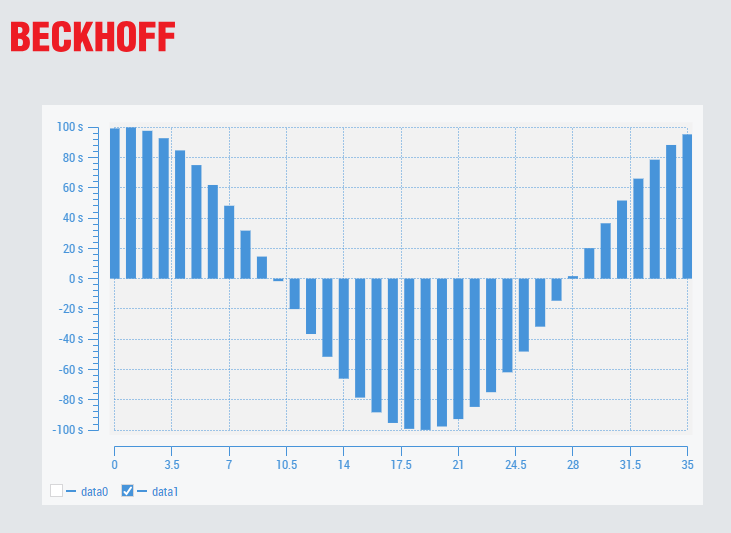

PREP
Safety Configuration
- STO
Axis Parameters
- Motor Direction :
- Scaling Factor :
- Max Velocity :
- Max Acceleration & Deceleration :
- Total Travel Distance :
- Soft limits :
- Jog Mode :
- Homing :
Tuning
- PID - Following Error :
- Torque Value :
PLC Sample Code
-
Sine Wave
PROGRAM PRG_SineWave VAR i : INT; (* Wave parameters *) Amplitude : LREAL := 100.0; // mm Offset : LREAL := 0.0; WaveLength : LREAL := 36.0; // one sine across 36 motors Speed : LREAL := 1.0; // rad/sec GlobalPhase : LREAL := 0; AxisPhase : LREAL; lfTargetPos : ARRAY[1..36] OF LREAL; CycleTime : LREAL := 0.0001; // PLC task END_VAR GlobalPhase := GlobalPhase + Speed * CycleTime; IF GlobalPhase > 6.283185 THEN GlobalPhase := GlobalPhase - 6.283185; END_IF FOR i := 1 TO 36 DO AxisPhase := 2.0 * 3.1415926535 * (INT_TO_LREAL(i-1) / WaveLength); lfTargetPos[i] := Offset + Amplitude * SIN(GlobalPhase + AxisPhase); END_FOR